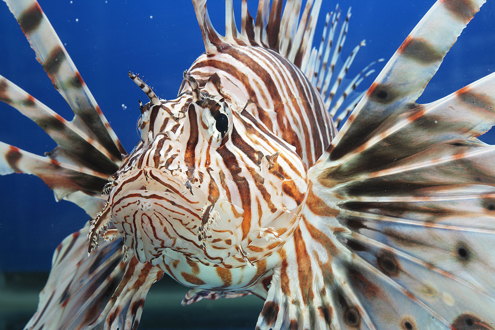

IS-2
Support prevention, eradication or management of invasive species in Tampa Bay and its watershed
OBJECTIVES:
Manage or eradicate existing invasive plants and animals and prevent future invasions, by informing homeowners, landowners, natural resource managers, ecotourism providers and outdoor enthusiasts about the harmful ecological and economic impacts of invasive plants and animals. Involve them in preventing, eradicating or managing invasive species. Support continued research and implementation of appropriate biological controls for invasive plants.
STATUS:
Ongoing. Action title revised from 2006 CCMP Implement a public education program to enlist citizen help in preventing marine bio-invasions. New action expands audience for education; includes terrestrial invasive species as well as aquatic; supports early warning systems to help prevent invasions; and recognizes that eradication and/or management of invasive species are viable strategies where prevention fails.
BACKGROUND:
Citizens now have more access than ever to information about invasive plants and animals via web-based sources and tools they can use to eradicate invasive species in their own yards and communities. Some high-profile invaders, such as Burmese pythons and lionfish, have been extensively publicized in mainstream media and are now widely recognized by the public as ecological threats.

Unfortunately, efforts to eradicate invasive species almost always come too late, after an invader has spread beyond reasonable hope of control. Even when threats are recognized quickly — as with lionfish — the population may multiply so rapidly and/or into such inaccessible areas that elimination becomes impossible, and management or containment is the only feasible remedy. However, when detected early enough, it is possible to prevent or eliminate invasive species — the toxic invasive marine alga, Caulerpa taxifolia, was successfully eradicated from California — or to limit their spread into critically important natural areas such as parks and preserves.
In 1999, researchers in Tampa Bay first reported large colonies of the Asian green mussel (Perna viridis) attached to pilings of major bay bridges. The mussel — thought to be a hitchhiker in the ballast water discharged by ships docking at the Port of Tampa — spread unchecked for several years, coating dock and bridge pilings and seawalls, clogging water intake pipes and even spreading into shallow, sandy areas on the bay bottom. Fortunately, mussel populations diminished dramatically by the late 2000s, probably due to natural factors such as extreme winter cold snaps and predation by native species, and the Asian green mussel is no longer viewed as a serious problem.

The rapid spread of zebra mussels and other suspected ballast water introductions led to new regulations requiring ships bound for U.S. ports to release ballast water in salty ocean waters, where any organisms in the ballast are less likely to survive. The Coast Guard enforces the rule and inspects ships for compliance. However, recent research has shown that significant amounts of ballast water are still being discharged to U.S. coastal systems without management and proper treatment.
The Asian green mussel was a highly publicized Florida interloper. This close call was a reminder of the threats posed by intentionally or accidentally introduced species and the need for monitoring programs to detect future invasions. A 2004 study commissioned by the Tampa Bay Estuary Program (TBEP) documented 55 known, suspected or likely marine invaders in the Tampa Bay ecosystem (Baker, Baker, and Fajans 2004). Charismatic animals as diverse as the Argentine black-and-white tegu lizard and the colorful and voracious lionfish have grabbed recent headlines in the Tampa Bay region.
Baker, P., S. M. Baker, and J. Fajans. 2004. “Nonindigenous Marine Species in the Greater Tampa Bay Ecosystem, Literature Review and Field Survey of Tampa Bay for Nonindigenous Marine and Estuarine Species.” 02-04. St. Petersburg, Florida: Tampa Bay Estuary Program. https://drive.google.com/file/d/1xFKBRxht3LaV0EViZ814LfW1bHwH_nmT/view?usp=drivesdk.
Smaller or less flamboyant species — including insects, bottom-dwelling organisms and bivalves — may escape early detection and thus the potential for swift eradication. Moreover, invasive plants continue to threaten the ecological integrity and diversity of both coastal wetlands and uplands, requiring costly and resource-intensive control efforts.
The Florida Natural Areas Inventory lists 93 plants that are known or suspected invasive species in and around Hillsborough, Pinellas, Manatee and Pasco counties. In recent years, resource managers have identified another 25 species of potential concern.

Brazilian pepper is a prolific, tenacious and well-established invasive plant in the Tampa Bay watershed. Its tangled, dense canopy forms impenetrable thickets that can crowd out mangroves and other native plants. An urban forest study conducted in Tampa found that Brazilian peppers ranked second only to red mangroves in canopy coverage. Removing this fast-growing plant plague that flourishes in disturbed soils — including coastal and freshwater wetlands that have been altered for farming, development or infrastructure — is a costly component of virtually all habitat restoration projects in the bay watershed.
A variety of reporting tools are available to encourage reporting invasive plant and animal species and to alert researchers and field personnel to their potential presence. For example, the U.S. Geological Survey’s Nonindigenous Aquatic Species Database collects and distributes data about introduced aquatic vertebrates and invertebrates, and soon it will expand its web-based repository to include plants.
The IveGot1 website and mobile phone app allows anyone to photograph, geo-tag and submit real-time observations of invasive plants and animals in Florida via a smartphone. This user-friendly system is part of the University of Georgia Center for Invasive Species and Ecosystem Health’s Early Detection and Distribution Mapping System. In conjunction with the Florida Invasive Species Partnership, the Center offers a number of early detection trainings and tools for resource managers and citizens.

A companion effort is the Introduced Reptile Early Detection and Documentation (REDDy) course jointly developed by the University of Florida, The Nature Conservancy and the National Park Service. This free online course teaches how to recognize and report large, invasive reptiles likely to be seen in Central and South Florida. REDDy-trained observers play an important role in detecting and documenting the spread of established species and sightings of new species.
Citizens also have a variety of tools available for removing invasive plants on their own property — recognizing that suburban backyards are often the front line in efforts to prevent expansion and/or continual reinfestation of invasive plants into adjacent wetlands and woods. TBEP has been a leader in engaging citizens in the battle against invasive species through its Eyes On The Bay education campaign. Components include:
- Creation of a printed and digital Field Guide to common invasive plants in the bay area in partnership with county extension programs and the Hillsborough Invasive Species Task Force.
- A short “Wicked Weeds” video showing homeowners how to safely remove invasive trees, shrubs and vines, produced in partnership with county extension programs.
- Two children’s books about responsible pet ownership and the hazards of aquarium dumping, in partnership with the University of Central Florida and Florida Sea Grant.
- A middle-school classroom curriculum, “Intruders in Paradise,” that is the first classroom module in Florida devoted exclusively to invasive plants and animals, in partnership with Florida Sea Grant.
- Diver’s Alert and Boater’s Alert laminated cards with photos of existing or potential marine invaders and where to report sightings.
- A popular Invasive Species Poetry Contest held in conjunction with TBEP’s 20th anniversary in 2011. The poetry contest received considerable publicity and submissions were compiled in an online booklet.
Additionally, TBEP’s Bay Mini-Grant Program has provided funding to homeowner associations, condominium associations and schools to remove invasive plants from common areas and pond or lake shorelines, and replace them with native plants. TBEP’s Give A Day For The Bay volunteer workday program focuses on removing invasive plants at area parks and preserves.
The Florida Fish and Wildlife Conservation Commission (FWC) has dramatically expanded its invasive species outreach to Floridians, sponsoring or co-sponsoring innovative citizen involvement events like the Python Hunt in the Everglades and Lionfish Roundups around the state.
FWC also is utilizing citizen volunteers to assist with research into the distribution and ecological impacts of specific invaders, such as the Argentine tegu lizard, which has an established breeding population in Hillsborough County.
UF’s Institute of Food and Agricultural Sciences (UF/IFAS), and its affiliated Sea Grant and county extension programs, are important sources of research-based information. IFAS research has led to early success in using a biological control, the air potato beetle, to manage the highly invasive air potato vine. Local extension programs routinely educate residents about invasive plants and eco-friendly alternatives, as part of the Florida-Friendly Landscaping™ program.

The 2012 formation of a multi-county, multi-agency Suncoast Cooperative Invasive Species Management Area (CISMA) offers a promising forum for regional education and coordination among a diverse coalition of stakeholders. Sponsored by the multi-agency Florida Invasive Species Partnership, 17 regional CISMAs coordinate broad-based efforts to address invasive species issues across public and private boundaries. The Suncoast CISMA encompasses Pinellas, Hillsborough, Manatee and Sarasota counties. Members include local and state park and preserve staff, natural resource managers, researchers and education specialists.
CISMA’s early accomplishments include a successful Exotic Pet Amnesty Day; multi-agency, multi-jurisdictional workdays at parks and preserves; public seminars on “invaders of interest” (such as channeled apple snails, tegu lizards and Japanese climbing fern); and creation of an initial inventory of existing educational materials produced by member organizations, including TBEP. CISMA also offered training opportunities that satisfied CEU requirements for field personnel.CISMA training sessions are offered ad hoc and advertised via social media. A symposium is conducted annually.
Sustaining momentum and interest has been a challenge, as the CISMA has no formal funding or support; it is entirely a volunteer effort led by staff from the agencies, local governments and non-profit organizations that form its core membership. A formal commitment by policymakers or key managers in member organizations to allocate staff time for participation would be beneficial. This top-down support greatly contributed to the success of a similar group, the Hillsborough Invasive Species Task Force.
Collaborative and consistent messaging to successfully prevent or minimize the impacts of invasive plant and animals will remain a priority need, especially as new residents, unfamiliar with Florida’s unique climate and natural systems and extreme vulnerability to invaders, continue to move to the Tampa Bay region.
This action supports early detection networks and seeks to expand opportunities for scientists, resource managers, resource users and the public to share information about potentially devastating invasions and to work cooperatively to prevent or limit their ecological impact.